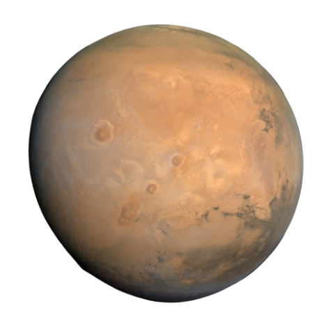

MARS
Mars is the fourth planet from the Sun and is known as the Red Planet. It’s a dusty, cold, desert world with a very thin atmosphere. Mars is also a dynamic planet with seasons, polar ice caps, canyons, extinct volcanoes, and evidence that it was even more active in the past.
Source: Wikipedia 🔗